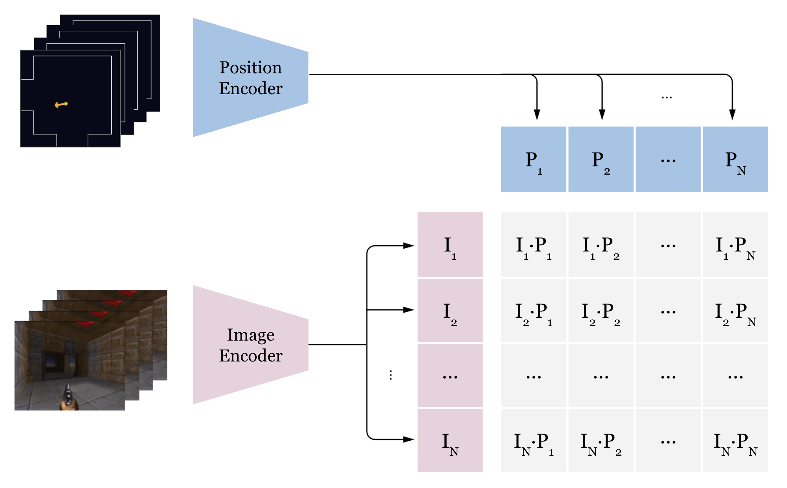
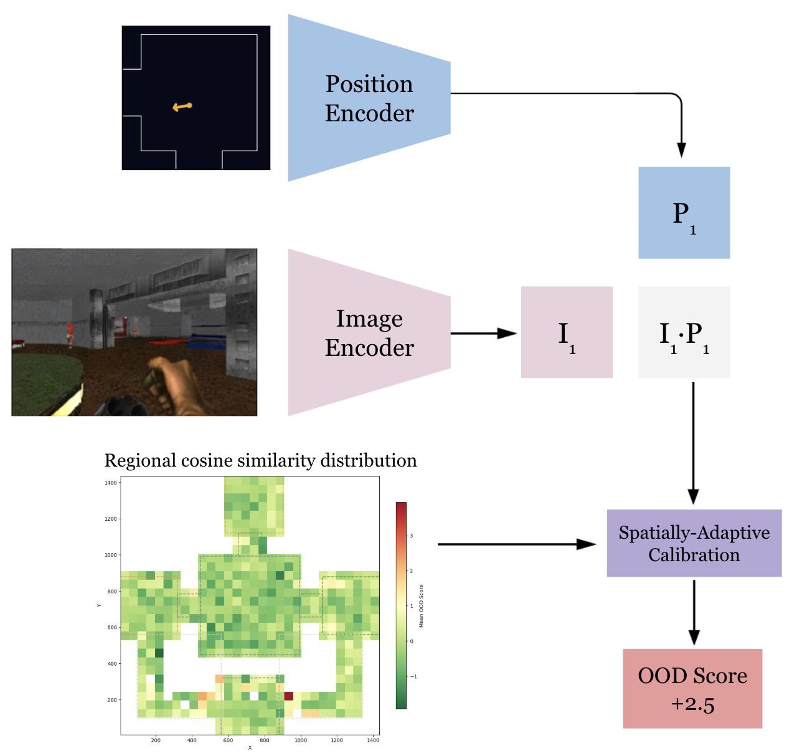

1Stanford University
World models are everywhere now — game simulation (GameNGen, Oasis), autonomous driving (GAIA-1, Vista), and robotics (UniSim, Genie, DVA). They all share the same failure mode: drift. Autoregressive world models condition each generated frame on a finite context window of previous frames. At inference, every frame in that window is itself generated — prediction errors compound across steps, and the context gradually fills with the model's own mistakes. Once the context window rolls past the last ground-truth frame, there is no anchor left. The distribution of latent states shifts, and generated output diverges from the true environment state. This is not a matter of model capacity or training data — it is a structural consequence of autoregressive generation over long horizons, analogous to the accumulation of integration error in dynamical systems.
In practice this means hallucinated roads, phantom walls, workspaces that don't exist. The longer the generation horizon, the worse it gets.
This post covers a contrastive drift detector that catches it. The underlying world model is a multiplayer Doom deathmatch simulator with shared state memory — multiple players occupy the same environment, and the world model must maintain a single consistent state across all of them. Drift in this setting is especially destructive because one player's divergence corrupts the shared state for everyone.
The idea is CLIP applied to world models — instead of matching images to text, match VAE latents to map coordinates. Low cosine similarity means the frame doesn't belong at that position. The model is small, runs thousands of frames per second, and generalizes to any world model conditioned on position or pose.
Three videos demonstrate the detector's behavior on held-out test data. Each video isolates one variable to show what the model is actually sensitive to.
Fix the position to the ground truth. Walk through a segment of consecutive frames — starting at the GT frame, moving forward to the end, wrapping to the start, and returning to GT. The OOD score stays low near the GT frame (where the latent actually matches the position) and rises as the latent drifts further away in the episode. This is the primary use case: detecting when the world model's output no longer matches where the player is.
Fix the latent to the ground truth frame. Move the position in a spiral outward from GT, then back, then sweep yaw ±90°. The OOD score tracks the displacement — it rises smoothly as position diverges and returns to baseline when the position comes back. The yaw sweep shows the model is also sensitive to orientation, not just XY.
Trained with DDP across multiple GPUs with early stopping. The learned temperature roughly doubles over training — sharpening the softmax distribution as the embeddings become more discriminative.
CLIP-style dual encoder. Two independent encoders project into the same embedding space — one from the VAE latent, one from the map position — and cosine similarity between them is the matching score.


Latent Position (x, y, yaw)
| |
Conv stem Normalize + sinusoidal PE
(strided convolutions) yaw → (sin, cos)
→ spatial token grid |
| Small MLP
+ register tokens |
| L2 normalize
Transformer blocks → embedding
(2D RoPE, QK-norm,
SwiGLU, stochastic depth)
|
Global avg pool → projection
→ L2 normalize → embedding
| |
+---------- cosine sim / τ ---------------+
↓
(B, B) logit matrix
The input is a VAE latent from the world model. A conv stem with strided convolutions downsamples it into a grid of tokens. Learnable register tokens are prepended before the transformer — these act as global summary tokens that attend to all spatial tokens but aren't included in the final pooling, serving as an information bottleneck.
The transformer uses:
After the transformer, global average pooling over spatial tokens only (registers excluded), then projection and L2 normalization.
Takes (x, y, yaw) and encodes it with sinusoidal positional encoding at log-spaced frequencies — low frequencies capture coarse structure (which room), high frequencies capture fine structure (exact viewpoint). A small MLP maps this to the same embedding space as the latent encoder. Deliberately compact — position is a 3-DoF signal, over-parameterizing it would let the model memorize positions by index rather than learning smooth spatial relationships.
The logit matrix is latent_emb @ position_emb.T * τ where τ is a single learned scalar. Initialized at the CLIP default (~14), it grew to ~35 during training — as the embeddings became more discriminative, a sharper softmax distribution improved the contrastive loss.
Symmetric InfoNCE — the same contrastive loss as CLIP. Each latent should match its own position and vice versa. Embeddings are gathered across all GPUs before computing the similarity matrix, so every sample in the batch is a negative for every other sample. More negatives means sharper gradients and better representations.
The model learns the semantic content of a frame — which room, which wall, which direction — not the rendering quality. The contrastive objective forces the encoder to extract position-relevant structure and discard everything else. The model doesn't care that the image looks bad. It cares that the image looks like the wrong place.
The noise sweep video shows this: the score barely moves through moderate noise because the scene structure is intact, and only rises when noise is severe enough to obliterate it entirely.
Training reinforces this with four augmentations: multi-scale spatially-correlated noise (matching AR model artifacts, not i.i.d. Gaussian), frequency-domain attenuation (simulating the high-freq detail loss AR models produce), 50% FLIP-style patch masking (dropping half the spatial tokens before the transformer — 2× training speedup with minimal accuracy loss), and position jitter (soft positive pairs from small position perturbations).
In practice, image drift is the dominant failure mode. The observation model (which generates frames) drifts first — the visual output degrades while the player's position is still roughly correct. Position drift, when it happens, is a downstream consequence: the dynamics module predicts the next position from the current state, and once the observation model has corrupted that state, the position predictions follow. This means the contrastive detector primarily fires on image drift, which is the earlier and more common signal.
Raw cosine similarity varies by map region. Open areas with diverse visual content produce higher baseline similarity than corridors or wall-facing positions (which have less visual diversity to disambiguate). Without correction, wall-facing frames would always score as OOD regardless of whether they're actually drifted.
The calibration step runs the full training set through the model, bins positions into a spatial grid, and computes per-bin statistics. At inference, the OOD score is z-normalized against the local region's baseline. This makes the threshold spatially uniform — a "low" cosine similarity in a complex open area is evaluated relative to what's normal for that region, not relative to the global average.
The hardest test case. Wall-facing frames have low visual diversity — many different walls across the map look similar (same texture, flat geometry, uniform lighting). The model must distinguish "this specific wall at this specific position" from "a different wall somewhere else," which is inherently harder than distinguishing two open rooms with different layouts.
Wall detection uses ray casting against the WAD geometry — a frame is "wall-facing" if a ray from the player position in their yaw direction hits a one-sided wall within a short distance.
The evaluation runs separate AUROC and FPR@95 metrics for wall-facing vs non-wall subsets. Wall-facing frames have higher false positive rates at matched thresholds — this is expected and is the primary failure mode to monitor.
The perturbation sweep systematically increases position displacement along individual axes (x, y, yaw) and combined, measuring how the OOD score responds. The score rises smoothly and monotonically with displacement — no blind spots or non-monotonicities. The detector reaches near-perfect separation for moderate displacements.
For very small perturbations, detection is partial. This is by design — the position jitter augmentation deliberately makes the model tolerant to sub-unit variations, so very small mismatches are in the noise floor.
Single-frame scoring. The model sees one frame at a time. It detects current-frame mismatch but can't detect gradual drift before it becomes severe. A temporal version — scoring a short window of recent frames — could catch drift earlier by detecting trends in the score trajectory. The tradeoff is complexity: recurrent state, sequence modeling, and the question of how long a window is useful before the drift is already obvious from a single frame.
Simple position encoder. An MLP on sinusoidal features may not capture complex map topology. Two positions that are close in Euclidean distance but separated by a wall (and therefore have completely different visual content) get similar position embeddings. A graph-based or topology-aware position encoder could help, but the current approach works well enough for the maps tested.
Coarse calibration grid. The spatial binning is coarse. Fine-grained map features (doorways, texture boundaries) span sub-bin regions. Bins with few training samples fall back to global stats, which can be poorly calibrated. A finer grid or a learned calibration network would improve spatial uniformity, at the cost of needing more calibration data.
Data coverage. Training used a stride over a subset of available frames. Rare positions or unusual viewpoints may be under-represented. Scaling to the full dataset is straightforward and would likely improve coverage in under-sampled map regions.
Wall-facing difficulty. Despite per-region calibration, wall-facing frames remain the primary source of false positives. The fundamental issue is that walls have less visual information per position than open areas — there's less signal for the model to match against. Possible mitigations: wall-aware calibration (separate stats for wall/non-wall bins), depth-based features as additional input, or a wall-specific scoring head.
If you find this work useful, please consider citing:
[Placeholder — Add your BibTeX or citation here]